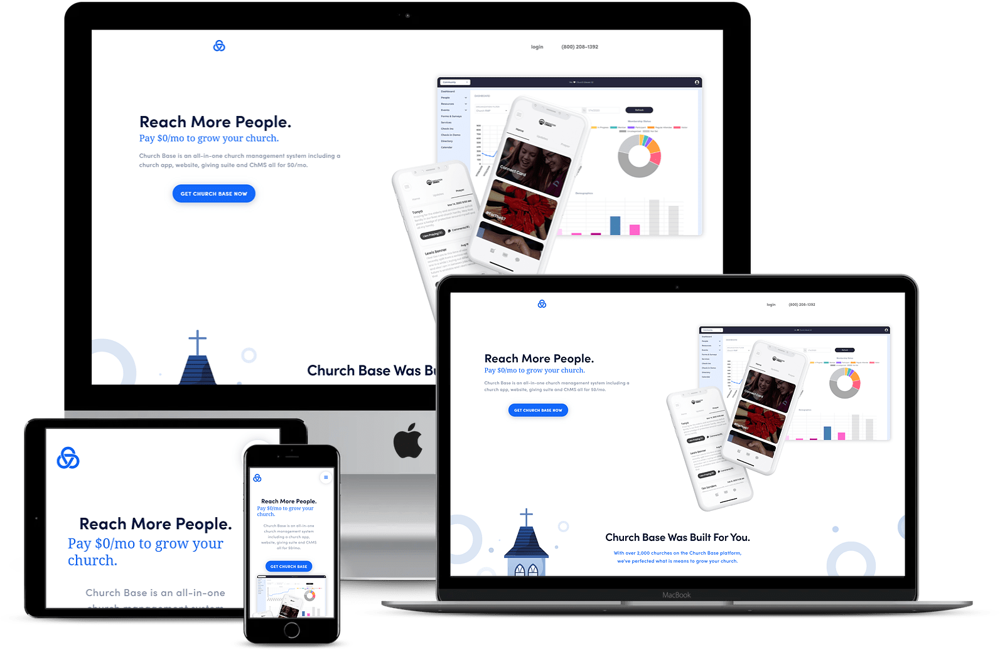
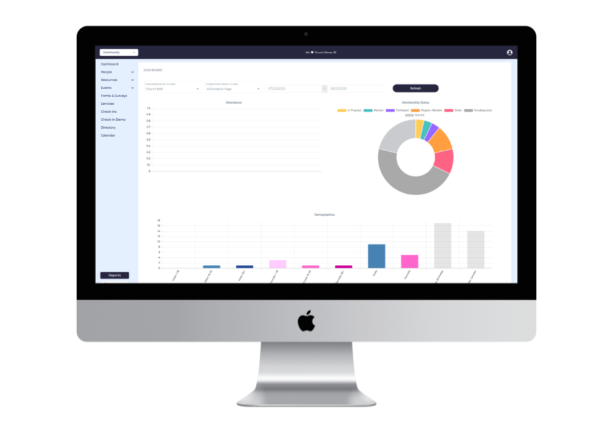

<div id="ajax-page" class="ajax-page-content">
    <div class="ajax-page-wrapper">
        <div class="ajax-page-nav">
<!--            <div class="nav-item ajax-page-prev-next">-->
<!--                <a class="ajax-page-load" href="exosecure.php"><i class="pe-7s-icon pe-7s-angle-left"></i></a>-->
<!--                <a class="ajax-page-load" href="solelinks.php"><i class="pe-7s-icon pe-7s-angle-right"></i></a>-->
<!--            </div>-->
            <div class="nav-item ajax-page-close-button">
                <a id="ajax-page-close-button" href="#"><i class="pe-7s-icon pe-7s-close"></i></a>
            </div>
        </div>

        <div class="ajax-page-title">
            <h1>Church Base</h1>
        </div>

        <div class="row">
            <div class="col-sm-7 col-md-7 portfolio-block">
                <div class="portfolio-page-image">
                    
                </div>
<!--                <div class="owl-carousel portfolio-page-carousel">-->
<!--                    <div class="item">-->
<!--                        -->
<!--                    </div>-->
<!--                    <div class="item">-->
<!--                        -->
<!--                    </div>-->
<!--                    <div class="item">-->
<!--                        -->
<!--                    </div>-->
<!--                </div>-->
<!--                <script type="text/javascript">-->
<!--                    function customAjaxScroll() {-->
<!--                        var windowWidth = $(window).width();-->
<!--                        if (windowWidth > 991) {-->
<!--                            // Custom Ajax Page Scroll-->
<!--                            $("#ajax-page").mCustomScrollbar({-->
<!--                                scrollInertia: 8,-->
<!--                                documentTouchScroll: false-->
<!--                            });-->
<!--                        } else {-->
<!--                            $("#ajax-page").mCustomScrollbar('destroy');-->
<!--                        }-->
<!--                    }-->
<!---->
<!--                    jQuery(document).ready(function ($) {-->
<!---->
<!--                        // Ajax Loaded Page Scroll-->
<!--                        customAjaxScroll();-->
<!---->
<!---->
<!--                        $('.portfolio-page-carousel').owlCarousel({-->
<!--                            smartSpeed: 1200,-->
<!--                            items: 1,-->
<!--                            loop: true,-->
<!--                            dots: true,-->
<!--                            nav: true,-->
<!--                            navText: false,-->
<!--                            margin: 10-->
<!--                        });-->
<!---->
<!--                    });-->
<!---->
<!--                    jQuery(window).on('resize', function () {-->
<!--                        customAjaxScroll();-->
<!--                    });-->
<!--                </script>-->
            </div>

            <div class="col-sm-5 col-md-5 portfolio-block">
                <!-- Project Description -->
                <div class="block-title">
                    <h3>Description</h3>
                </div>
                <ul class="project-general-info">
                    <!--                    <li><p><i class="fa fa-user"></i>Ammar Habib</p></li>-->
                    <li><p><i class="fa fa-globe"></i> <a href="https://www.churchbase.com/" target="_blank">https://www.churchbase.com</a>
                        </p></li>
                </ul>

                <p class="text-justify">
                    Church Base is a one of a kind software that includes all 4 major digital products churches need to grow, integrated into a single dashboard. Church Base Suite is a revolutionary new way of creating an app and website for your church. Both the App and the Website are custom branded for your church and come with numerous features.
                </p>

                <p class="text-justify">
                    Build Church Base Figma base dashboard design in HTML5, CSS3, Bootstrap and ApolloApps hybrid apps designs in Ionic 4 which are  available for Android and IOS.
                </p>
                <!-- /Project Description -->

                <!-- Technology -->
                <div class="tags-block">
                    <div class="block-title">
                        <h3>Technology</h3>
                    </div>
                    <ul class="tags">
                        <li><a>Figma Design</a></li>
                        <li><a>HTML 5</a></li>
                        <li><a>CSS 3</a></li>
                        <li><a>Bootstrap 4</a></li>
                        <li><a>JavaScript</a></li>
                        <li><a>jQuery</a></li>
                        <li><a>Angular JS</a></li>
                        <li><a>Codeigniter</a></li>
                        <li><a>WordPress (CMS)</a></li>
                        <li><a>Ionic PWA 4 (Progress Web Apps)</a></li>
                    </ul>
                </div>
                <!-- /Technology -->

                <!-- Share Buttons -->
                <!--                <div class="btn-group share-buttons">-->
                <!--                    <div class="block-title">-->
                <!--                        <h3>Share</h3>-->
                <!--                    </div>-->
                <!--                    <a href="#" target="_blank" class="btn"><i class="fa fa-facebook"></i> </a>-->
                <!--                    <a href="#" target="_blank" class="btn"><i class="fa fa-twitter"></i> </a>-->
                <!--                    <a href="#" target="_blank" class="btn"><i class="fa fa-dribbble"></i> </a>-->
                <!--                </div>-->
                <!-- /Share Buttons -->
            </div>
        </div>
    </div>
</div>
